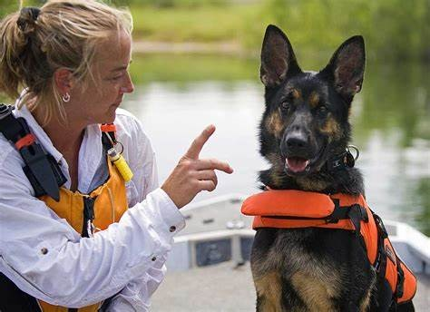
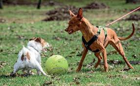

Contamos con el mejor equipo con certificacion internacional

Huellitas de amor es una forma divertida de educar y adiestrar a tu perro, de solucionar sus problemas de conducta, donde aprenderás a educar y a adiestrar a tu perro de una forma divertida.

Nuestra trayectoria en el mundo canino comienza en el mundo de la protección animal con labores de voluntariado en distintas protectoras de animales, donde aprendimos que los problemas o conductas de los perros siempre tienen un porqué. Necesitamos entenderles y que nos entiendan para poder enseñarles tener una convivencia adecuada y armoniosa.
Si tu perro presenta algún problema de conducta que quieres tratar o simplemente quieres mejorar tu relación con él de forma divertida, en Huellitas de amor nos comprometemos a conseguirlo. -

Nuestro equipo
Angie Katherine Gomez Fundadora de la organizacion huellitas de amor
Karen Julieth Contreras Adiestradora canina profesional
Juliana Piza Ruiz Canguro y guardería canina
|